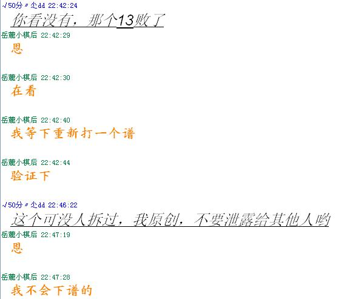

瑞星
#1 瑞星 作者：高星 发表时间：2009-6-4 9:05:48
=======上图对应的爱五子棋谱代码如下，以便你拆解：========
h8h7h10i6i10i7g7g8j5i9g10f10h9
======================================================谁知道这个白怎么下好啊
#2 Re:瑞星 作者：茗弈小刀 发表时间：2009-6-4 11:24:04
=======上图对应的爱五子棋谱代码如下，以便你拆解：========
h8h7h10i6i10i7g7g8j5i9g10f10h9h12
======================================================
13是败，这个14杀了。
［ 静待花开 于 2009-6-4 13:13:26 时花20金币送鲜花一朵］
#3 Re:瑞星 作者：高星 发表时间：2009-6-4 11:56:34
=======上图对应的爱五子棋谱代码如下，以便你拆解：========
h8h7h10i6i10i7g7g8j5i9g10f10h9h12f9
======================================================这样以后呢 姐姐多摆几步让我看看啊

#4 Re:瑞星 作者：茗弈小刀 发表时间：2009-6-4 12:14:15
=======上图对应的爱五子棋谱代码如下，以便你拆解：========
h8h7h10i6i10i7g7g8j5i9g10f10h9h12f9i8i5g6
======================================================
［ 撒蓉儿 于 2009-6-4 19:48:16 时花20金币送鲜花一朵］
#5 Re:瑞星 作者：岳麓小棋后 发表时间：2009-6-4 12:26:49
这路杀法，是飞哥拆出来的，如果不是自己独立拆解的，引用别人东西时候最好注明下，我记得拆这个13的过程是有点痛苦的，这么把别人的东西公开，不知道对方会怎么想#6 Re:瑞星 作者：飞哥 发表时间：2009-6-4 12:42:54
有容乃大，真诚互助。是我叫刀刀发的，这是以前茗弈几个朋友一起研究的，刀刀的决定就是我的决定。还是谢谢小棋后。#7 Re:Re:瑞星 作者：岳麓小棋后 发表时间：2009-6-4 12:56:18

那是我多事了，这些话是你以前说的，既然是你的决定，我当然支持了，我也经常公开我自己独立拆的东西的截图的，呵呵
#8 Re:瑞星 作者：飞哥 发表时间：2009-6-4 12:58:13
此一时彼一时，你不也是吗?谢谢支持理解。#9 Re:瑞星 作者：神奇史沟飞 发表时间：2009-6-4 12:59:14
本來是討論棋的﹐結果變成這樣﹐無聊。
#10 Re:瑞星 作者：没事摆石子玩 发表时间：2009-6-4 13:03:27
小刀LS是好样的，每天都见她在三手教棋，相信支撑她的是信念和责任。#11 Re:瑞星 作者：忧郁的双眼 发表时间：2009-6-4 13:07:06
这种高难度的题都必胜出来了
好强大哦~
#12 Re:瑞星 作者：吃大米饭的鱼 发表时间：2009-6-4 13:12:12
我想小刀师傅拿谱这些也没用滴，平时很少见她下其，一般都在带徒弟，弟弟。我们问她要什么谱她也给的。她的目的我想很简单，责任，帮助，互爱。#13 Re:瑞星 作者：岳麓小棋后 发表时间：2009-6-4 13:14:23
一转身，即是永远，再见了。。。#14 Re:瑞星 作者：wd1988 发表时间：2009-6-4 13:16:39
............别变成角斗场呀，话说这论坛最好的就是看着别人放研究，悄悄拿回去自己研究。否则张嘴谴责就会得罪人，多不好#15 Re:瑞星 作者：行云流水 发表时间：2009-6-4 14:15:23
发表意见之前先了解一下情况比较好。#16 Re:瑞星 作者：岳麓小棋后 发表时间：2009-6-4 14:32:55
茗弈内最早做这个11地毯的人就是我，因为和飞哥一起拆棋的缘故，我们就一起做这份地毯了，就这么两个人，哪有好几个人之说，后面加入的小刀、小飞机，建设性贡献几乎为0，坏蛋有交流，但没和我们分享他的研究，就这样。
之后的一些分支得到三手一朋友蓝天菲儿、论坛朋友胆小的骆驼、淡红的秋樱的帮助。
这里表示下感谢，这个13拆的过程很有意思，不要错过这么大的一个乐趣呵，接下来中招的16、18手很多呵！
#17 Re:瑞星 作者：wd1988 发表时间：2009-6-4 14:35:28
当研究者慢慢研究深入之后，自私之心也慢慢开始腐蚀自身了。。。开始藏私了，开始知道版权了。。。五子棋研究界的悲剧［ 有志青年 于 2009-6-5 7:46:22 时花20金币送鲜花一朵］
#18 Re:瑞星 作者：岳麓小棋后 发表时间：2009-6-4 14:40:28
私有财产是神圣不可侵犯的，这是文明的开始，你政治没学好吧？ 别人的劳动时间就不是时间了，信任你才和你一起分享的，这个问题涉及到信任基础的，不是藏私版权问题，OK？
别人的劳动时间就不是时间了，信任你才和你一起分享的，这个问题涉及到信任基础的，不是藏私版权问题，OK？［ 有志青年 于 2009-6-5 7:46:34 时花20金币送鲜花一朵］
#19 Re:瑞星 作者：茗弈小刀 发表时间：2009-6-4 15:38:28
我想这是茗弈以前的研究吧，既然你退社了，那么研究也就谈不上什么研究了，何况我由于社里事务多，一般谱都是委托飞哥做。茗弈的谱我想我是有这个权利决定的吧，好了，不争论这个了。既然你也提到是飞哥的研究，那么由他来说话吧。#20 Re:瑞星 作者：飞哥 发表时间：2009-6-4 15:47:17
这么大个社，刀刀哪来那么多时间做谱？还要带众多徒弟。我很早就告诉她，我的谱就是她的，她有这权利自己做主。她也给了我很多谱。但我想我们谱拿来的目的是帮助大家，和大家交流。#21 Re:瑞星 作者：岳麓小棋后 发表时间：2009-6-4 15:47:34
其实反感的不是这个，恩，不谈这件事了#22 Re:瑞星 作者：妙玉偷星 发表时间：2009-6-4 15:51:06
晕，恐怖啊，因为一个图都能长篇大论，真是服了，，不就一路杀法吗，真是让人无语，有种到实战当中杀出来，纸上谈兵--有什么用，走出来实战，这个局能杀出来才是真的，无论拆了多少谱，实战中能胜才是真的，#23 Re:瑞星 作者：飞哥 发表时间：2009-6-4 15:53:22
我相信你进社的时候，刀刀也给过你帮助和关心吧，也许那对你来说不算什么，但毕竟大家在一起过，刀刀是个善良而热心的人，你也应该理解她和支持她。#24 Re:瑞星 作者：岳麓小棋后 发表时间：2009-6-4 15:54:28
不要拿实战戳网战的痛处，实战也未必杀不出来，很多东西是不方便说出来，才选择离开的，茗弈曾经是我一度的信仰
我一直很理解她了，也感谢她，我的五子棋启蒙是在茗弈，这个我会铭记一生的，自认没有辜负她。。。
#25 Re:瑞星 作者：茗奕的飞猪 发表时间：2009-6-4 15:56:45
谁欺负你啦？不妨直说。
#26 Re:瑞星 作者：妙玉偷星 发表时间：2009-6-4 15:58:20
无语掉，您，，那凉快，那呆着去，
#27 Re:瑞星 作者：茗弈小刀 发表时间：2009-6-4 15:59:30
唉，大家不好吵，这事就到此为止吧。其实小棋后也没有什么坏的意思呀，大家说清楚就行了。大家能在一起是缘分，即使不在一个社还是朋友呀，互相珍惜。#28 Re:瑞星 作者：妙玉偷星 发表时间：2009-6-4 16:05:48
给大家发个我的感受吧
忍有多大，不要伤到自己的尊严
利益暂且放到一边
不再沉默中爆发，就在沉默中灭亡
就算爆发的结果是失败
真理就是真理
没有遗憾
也不叫失败
如果一个人说你傻两个人说你傻三个人说你傻
即使你自己知道自己很聪明，还会有第四五`````````````个人说你傻
如果一个人说你坏两个人说你坏三个人说你坏
你就坏了吗？
时事弄人
审时度势
任何事情都有前因后果，只有做到心中有数，才能掌握控自我
当小不忍时，轨道就会偏离，乱了大谋，再想循规蹈矩，可就难啦！
千语万言道不尽，为有独饮换清轻
#29 Re:瑞星 作者：南京小飞机 发表时间：2009-6-4 16:10:21
居然说我和坏蛋贡献为0（做这个谱确实没什么贡献），重在参与……#30 Re:瑞星 作者：刀魂 发表时间：2009-6-4 16:49:31
都是 牛人撒。。。#31 Re:瑞星 作者：二十七刀 发表时间：2009-6-4 17:33:13
一帮兔崽子,最烦你们吵闹,好好的不是挺好吗?全都不耐烦了
如果有一天见面了,尴尬的不说话好吗?
这次在北京我和徐永伟还谈话了,也看到了那威和老徐说话了。
大家相处和睦融洽挺好的。
［ 茗弈小刀 于 2009-6-4 17:47:46 时花20金币送鲜花一朵］
#32 Re:瑞星 作者：lfzxdh 发表时间：2009-6-4 18:42:33
LS 今年过年我争取来台州哈，如果棋友会还在台州举办的话#33 Re:瑞星 作者：神奇史沟飞 发表时间：2009-6-4 18:53:42
五子棋不同其他，你发现了必胜，别人也同样有机会发现，居然有人说这是版权。自己没看好自己的研究就把责任推给别人，不愿交流就躲起来吧，然后自己慢慢研究，这下就没人会侵犯你的版权了。
［ 撒蓉儿 于 2009-6-4 20:03:39 时花20金币送鲜花一朵］
#34 Re:瑞星 作者：wd1988 发表时间：2009-6-4 19:19:27
当初接触五子棋的时候，孩子们都很热心地向大师们请教，我也是看在眼里的（孩子们之一），大师们也从来没有因为自己的研究是私有财产而不理孩子们的提问。后来某些孩子们翅膀硬了，自己做出了一点点研究，就开始知道“私有财产不可侵犯”了，开始因为某一张连分支都没有的图而大肆宣扬版权问题了。。。
不知道我和一众大师们热情探讨，在他们的帮助下地毯了好几个“曾经的结论”并将棋谱放到论坛让大家参考的时候，是不是有很多人恨得牙痒痒呢？那也是没法子的事，谁让我在那些人之后也同样做出了这样的地毯呢？我没偷没抢，只不过知道了结论，自己努力做出来，当然算是本人的成果了，不知道大家是喜欢我这样多一点呢，还是喜欢蒙着面藏着私，看见别人（仅仅）说出结论、连谱都没有放，就跳出来要讲理的人多一点呢？
［ 撒蓉儿 于 2009-6-4 20:04:21 时花20金币送鲜花一朵］
#35 Re:瑞星 作者：高星 发表时间：2009-6-4 19:32:26
都怪偶太懶了，拆其確實是很繁瑣的事，不過我覺的神奇史沟飞說的很對啊，做人不能這麼自私的呢

#36 Re:瑞星 作者：安娜制作所 发表时间：2009-6-5 16:12:04
有好的东西就不要藏着,要藏就藏好点8,别让我看见哈!